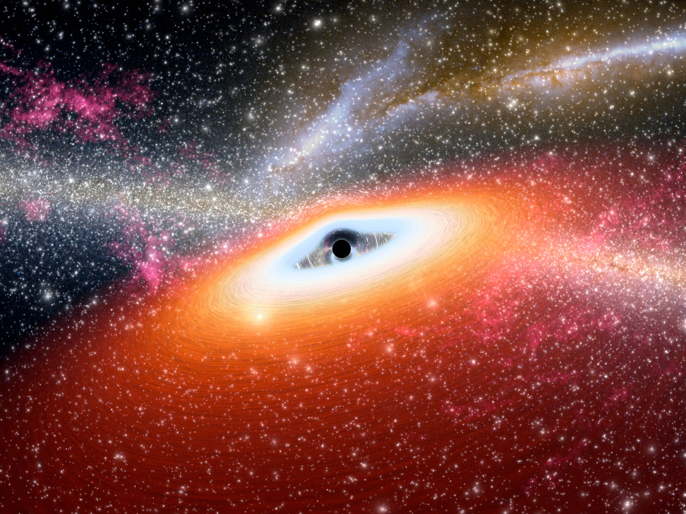

Black Holes: Giants at the Heart of Every Galaxy
By Physics Society • 2025-09-07Black holes are some of the most fascinating and extreme objects in the universe, formed when massive stars collapse under their own gravity. For decades, astronomers have suspected that every large galaxy harbors a supermassive black hole at its core — including our own Milky Way, whose central black hole, Sagittarius A*, is over 4 million times the mass of the Sun.
The Life Cycle of a Star
When a star several times heavier than our Sun runs out of fuel, its core collapses in a dramatic supernova explosion. If the leftover core is massive enough, it becomes a black hole — a region where gravity is so strong that not even light can escape. This process creates stellar-mass black holes.
Intermediate vs. Supermassive
While stellar-mass and supermassive black holes are well documented, astronomers are actively hunting intermediate-mass black holes — objects between ~102 and 105 solar masses — as a possible “missing link” in black hole growth.
Why Black Holes Matter
Far from being cosmic vacuum cleaners, black holes shape galaxies. Jets and radiation from actively feeding black holes regulate star formation, and gravitational-wave mergers let us test general relativity in the strong-gravity regime.
What’s Next
Future telescopes and next-gen gravitational-wave detectors will trace black hole growth across cosmic time and clarify how supermassive black holes formed so early in the universe.